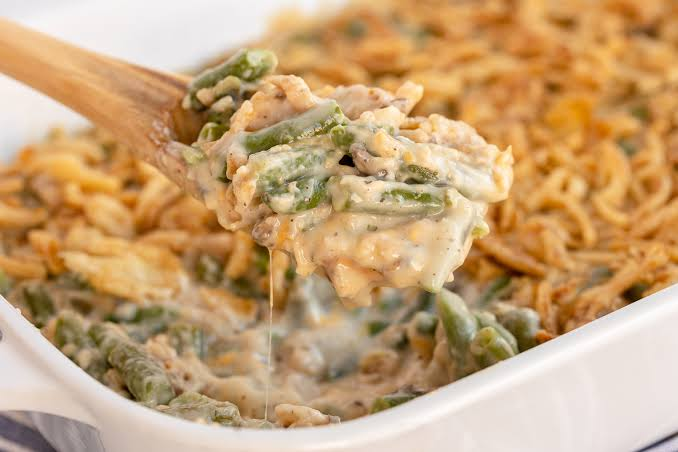

Home
Green Bean Casserole

Green bean casserole is a classic side dish that combines tender green beans, creamy mushroom sauce, and crispy fried onions. This easy recipe is perfect for holiday dinners or any time you want a comforting vegetable dish. With just a few simple ingredients, you can create a flavorful casserole that will be a hit with family and friends.
Ingredients
- 1 pound fresh green beans, trimmed and cut into 2-inch pieces
- 1 can (10.5 ounces) condensed cream of mushroom soup
- 1/2 cup milk
- 1 teaspoon soy sauce
- 1/4 teaspoon black pepper
- 1 1/3 cups French fried onions
Instructions
- Preheat your oven to 350°F (175°C).
- Bring a large pot of water to a boil. Add the green beans and cook for 3-4 minutes until they are tender-crisp. Drain and set aside.
- In a mixing bowl, combine the cream of mushroom soup, milk, soy sauce, and black pepper. Stir until well blended.
- Add the cooked green beans to the soup mixture and stir until the beans are evenly coated.
- Transfer the green bean mixture to a 9x13-inch baking dish. Sprinkle the French fried onions evenly over the top.
- Bake in the preheated oven for 25-30 minutes, or until the casserole is hot and bubbly and the onions are golden brown.
- Remove from the oven and let it cool for a few minutes before serving. Enjoy!